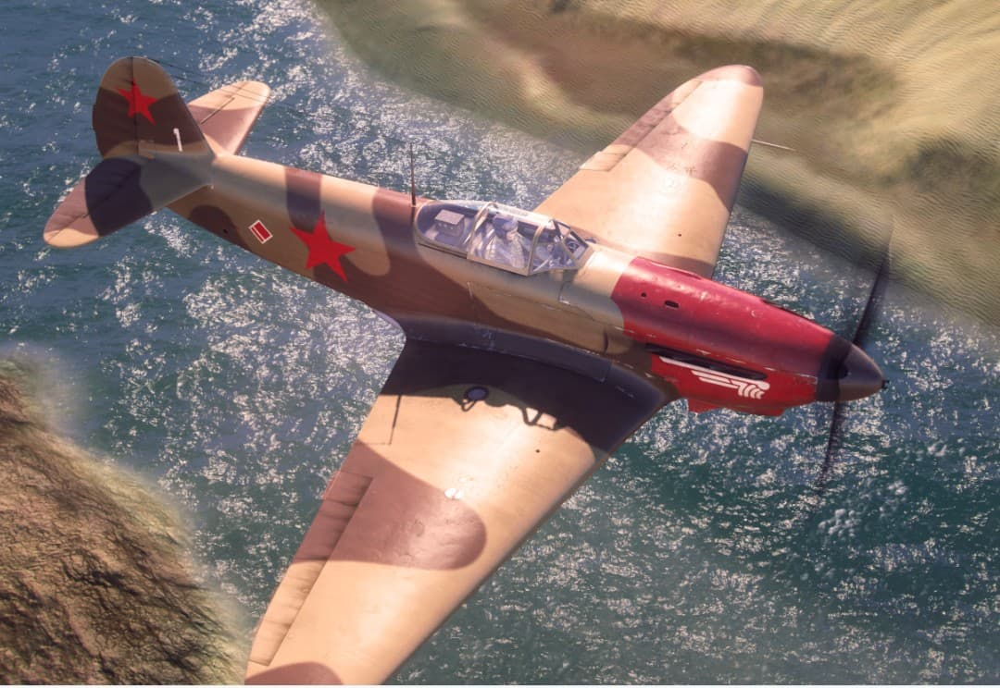
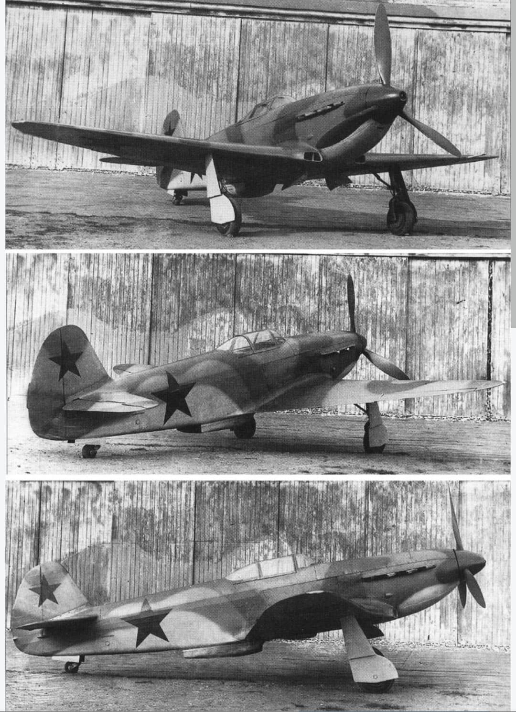

Histoire, performances, caractéristiques techniques et rôle tactique sur le front de l'Est

Le Yakovlev Yak-1 est un avion de chasse monoplace à hélice conçu par le bureau d'études dirigé par l'ingénieur Alexandre Yakovlev. Entré en service en 1940, il s'impose rapidement comme l'un des appareils fondateurs de la modernisation de l'Armée de l'air soviétique (VVS).
Conçu pour contrer l'aviation allemande au début de l'Opération Barbarossa en 1941, le Yak-1 alliait une grande agilité, une construction ingénieuse économe en métaux stratégiques et une redoutable efficacité à basse et moyenne altitude. Il a servi de socle à toute une famille de chasseurs légendaires (Yak-3, Yak-7, Yak-9).
Voici les spécifications de référence du Yakovlev Yak-1 (versions de série standard de 1941–1942) :
Au déclenchement du conflit, l'industrie aéronautique soviétique fait face à de graves pénuries d'aluminium. Pour y remédier, Yakovlev conçoit le Yak-1 selon une architecture de **construction mixte** :

Le Yak-1 brillait particulièrement par sa maniabilité en combat tournoyant (*dogfight*). Bien qu'un peu inférieur aux Messerschmitt Bf 109 allemands à très haute altitude, il surclassait ces derniers en dessous de 4 000 mètres, théâtre de la majorité des affrontements aériens sur le front de l'Est.
Il a également été piloté par de nombreux as soviétiques de premier plan et a équipé les premiers régiments d'aviation féminins créés par Marina Raskova (dont le 586e Régiment de chasse aérienne avec Lidia Litvyak).
Page du Musée HOP WW2 – Yakovlev Yak-1